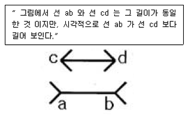
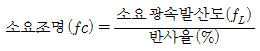
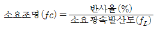
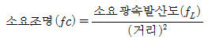
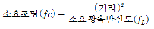
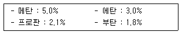
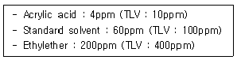

산업안전산업기사 (2007-05-13 기출문제)
1과목: 산업안전관리론
1. B 기업체에서 1000명의 작업자가 1주에 40시간, 년간 50주를 작업하는데 80건의 재해가 발생하였다. 이 가운데 작업자들이 질병 등 기타 이유로 인하여 총 근로시간의 5%를 결근하였다면 이 기업체의 도수율은 약 얼마인가?
- 35.⑤
- 42.11
- 57.21
- 68.35
(정답률: 73%)

2. 근로자 400명이 1일 9시간씩 년간 300일을 작업하는데 1명의 사망자와 휴업일수 200일의 손실을 가져 왔다. 이 작업장의 강도율은 약 얼마인가?
- 6.67
- 7.10
- 7.98
- 8.52
(정답률: 49%)
3. 다음 중 사고예방대책의 기본 원리 5단계 중 2단계에 해당하는 것은?
- 기술적 개선
- 안전 점검
- 경영층의 참여
- 안전관리자 임명
(정답률: 68%)
4. 다음 중 산업안전보건법에서 정하는 산업안전보건표지의 종류에 해당되지 않는 것은?
- 안내표지
- 경고표지
- 지시표지
- 보호표지
(정답률: 89%)
5. 학습동기를 유발시키는 방법 중에서 촉진효과가 가장 큰 것은?
- 통제
- 질책
- 무시
- 칭찬
(정답률: 92%)
6. 다음 중 불안전한 행동과 가장 관계가 적은 것은?
- 물건을 급히 운반하려가 부딪혔다.
- 뛰어가다 넘어져 골절상을 입었다.
- 높은 장소에서 작업 중 부주의로 떨어졌다.
- 정지해 있는 호이스트의 고리에 머리에 다쳤다.
(정답률: 73%)
7. 정신, 신경기능 중심의 피로도를 측정하는 방법으로 거리가 먼 것은?
- 지각역치
- 반응시간
- 에너지대사율
- 안구운동
(정답률: 54%)
8. 1000명 이상의 대규모 기업에서 일반적으로 많이 채택되고 있는 안전조직의 방식은?
- 라인 방식
- 스탭 방식
- 라인-스탭 방식
- 인간-기계 방식
(정답률: 88%)
9. 다음의 의식 레벨 단계 중 신뢰도 가장 높은 단계는?
- phase Ⅳ
- phase Ⅲ
- phase Ⅱ
- phase Ⅰ
(정답률: 64%)
10. 안전보건개선계획서에 포함되어야 할 사항이 아닌 것은?
- 안전ㆍ보건교육
- 안전보건관리예산
- 안전ㆍ보건관리체계
- 산업재해예방 및 작업환경의 개선을 위하여 필요한 사항
(정답률: 61%)
11. 다음의 설명과 그림은 어떤 착시 현상과 관계가 깊은가?

- 헬몰쯔(Helmholz)의 착시
- 퀼러(Ko hler)의 착시
- 뮬러-라이어(Muller-Lyer)의 착시
- 포겐 도르프(Poggendorf)의 착시
(정답률: 68%)
12. 안전교육 중 ATP(Administration Training Program)라고도 하며, 당초에는 일부 회사의 최고 관리자에 대해서만 행하여졌던 것이 널리 보급된 것은?
- TWI(Training Within Industry)
- MTP(Management Training Program)
- CCS(Civil Communication Section)
- ATT(American Telephone & Telegram Co)
(정답률: 56%)
13. 안전보건교육의 기본적인 지도 원리에 해당되지 않는 것은?
- 동기부여
- 반복교육
- 5관의 활용
- 어려운 부분에서 쉬운 부분으로
(정답률: 84%)
14. “사고에는 반드시 원인이 있다.” 라는 원칙은 산업재해예방의 4원칙 중 무엇에 해당하는가?
- 대책 선정의 원칙
- 원인 연계의 원칙
- 손실 우연의 원칙
- 예방 기능의 원칙
(정답률: 88%)
15. 공정안전보고서의 세부내용 중 안전운전계획에 포함하여야 하는 것이 아닌 것은?
- 안전운전지침서
- 안전작업허가
- 설비배치도
- 도급업체 안전관리계획
(정답률: 39%)
16. 안전모 중에서 머리 부위의 감전에 의한 위험을 방지할 수 있는 것은?
- A 형
- B 형
- AC 형
- AE 형
(정답률: 84%)
17. 비통제의 집단 행동 중 폭동과 같은 것을 말하며, 군중(Crowd)보다 합의성이 없고, 감정에 의해서만 행동하는 특성을 무엇이라 하는가?
- 모브(Mob)
- 패닉(Panic)
- 모방(Imitation)
- 심리적 점염(mental Epidemic)
(정답률: 68%)
18. 다음 중 TWI의 교육과정과 연관성이 없는 것은?
- 작업지도 훈련
- 인간관계 훈련
- 정책수립 훈련
- 작업방법 훈련
(정답률: 77%)
19. 일반 보안면의 투시부의 가시광선 투과성은 투명한 투시부일 경우 입사광선의 85% 이상을 투과하여야 하며 채색투시부의 경우 차광도에 따라 투과율이 결정되는데 차광도가 “밝음”일 때 투과율은 몇 %T 인가?
- 50±7
- 30±7
- 23±4
- 14±4
(정답률: 43%)
20. 다음 중 토의법의 장점으로 볼 수 없는 것은?
- 사고, 표현력을 향상시켜 준다.
- 민주적 태도의 가치관을 육성할 수 있다.
- 타인의 의견을 존중하는 태도를 기를 수 있다.
- 전체적인 교육내용을 제시하는데 유리하다.
(정답률: 79%)
2과목: 인간공학 및 시스템안전공학
21. 다음 중 기계가 갖고 있는 한계점으로 옳지 않은 것은?
- 기계는 융통적이지 못하다.
- 기계는 임기응변을 하지 못한다.
- 기계는 물리적인 힘을 지속적으로 적용하지 못한다.
- 기계는 예기치 못한 사건들을 감지할 수 없다.
(정답률: 72%)
22. 다음 중 주어진 작업에 대하여 필요한 소요조명(fc)을 구하는 식으로 옳은 것은?




(정답률: 51%)
23. 시스템안전분석에 대한 설명 중 틀린 것은?
- 해석의 수리적 방법에 따라 정성적, 정량적 해석 방법이 있다.
- 해석의 논리적 견지에 따라 귀납적, 연역적 해석 방법이 있다.
- FTA는 연역적, 정량적 분석이 가능한 방법이다.
- 예비사고분석(PHA)은 운용사고 해석이라고 말할 수 있다.
(정답률: 50%)
24. 옥외의 자연조명에서 최적명시거리일 때 문자나 숫자의 높이에 대한 획폭비는 일반적으로 검은 바탕에 흰 숫자를 쓸 때는 (A), 흰 바탕에 검은 숫자를 쓸 때는 (B)가 독해성이 최적이 된다고 한다. 다음 중 (A), (B)의 획폭비로 가장 적절한 것은?
- (A) 1 : 5.3 (B) 1 : 10
- (A) 1 : 3.1 (B) 1 : 12
- (A) 1 : 11.1 (B) 1 : 4
- (A) 1 : 13.3 (B) 1 : 8
(정답률: 31%)
25. 1 sone 은 몇 phon 인가?
- 1
- 10
- 20
- 40
(정답률: 61%)
26. 시야는 색상에 따라 그 범위가 달라지는데 다음 중 시야의 범위가 가장 넓은 색상은?
- 백색
- 청색
- 적색
- 녹색
(정답률: 67%)
27. 평균고장시간(MTTF)이 6×105 시간인 요소 3개가 직렬계를 이루었을 때의 계(system)의 수명은?
- 2×105 시간
- 3×105 시간
- 9×105 시간
- 18×105 시간
(정답률: 51%)
28. 병렬계 시스템의 특성에 대한 설명으로 틀린 것은?
- 요소의 중복도가 증가할수록 계의 수명은 짧아진다.
- 요소의 수가 많을수록 고장의 기회는 줄어든다.
- 요소의 어느 하나가 정상적이면 계는 정상이다.
- 시스템의 수명은 요소 중 수명이 가장 긴 것으로 정할 수 있다.
(정답률: 57%)
29. 산업안전표지 중 유독물 경고는 해골과 뼈로 나타내고 있다. 이처럼 사물이나 행동을 단순하고 정확하게 나타낸 부호를 무엇이라 하는가?
- 묘사적 부호
- 추상적 부호
- 사실적 부호
- 임의적 부호
(정답률: 63%)
30. 시스템이나 서브시스템 위험분석을 위하여 일반적으로 사용되는 전형적인 정성적, 귀납적 분석기법으로 시스템에 영향을 미치는 모든 요소의 고장을 형태별로 분석하여 그 영향을 검토하는 분석기법은?
- PHA
- FMEA
- SSHA
- ETA
(정답률: 68%)
31. 성공수(success tree)의 전상사상을 발생시키는 기본사상들의 최고집합을 시스템 신뢰도 측면에서는 무엇이라고 하는가?
- cut set
- true set
- path set
- module set
(정답률: 43%)
32. 다음 중 택시요금 계기와 같이 숫자로 표시되는 정량적인 동적 표시장치를 무엇이라 하는가?
- 계수형
- 동목형
- 동칭형
- 수평형
(정답률: 78%)
33. 일정한 범위에서 수치가 자주 또는 계속 변하는 경우 가장 유용한 표시장치는?
- 디지털 표시장치
- 카운터 표시장치
- 고정눈금 이동지침 표시장치
- 이동눈금 고정지침 표시장치
(정답률: 51%)
34. 음압수준이 10dB 증가하면 음압은 몇 배가 되겠는가?
- √5
- √10
- 5
- 10
(정답률: 59%)
35. 작업원 2인이 중복하여 작업하는 공정에서 작업자의 신뢰도는 0.85로 동일하며, 작업 간의 50% 만 중복작업을 지원한다면 이 공정의 인간신뢰도는 얼마인가?
- 0.6694
- 0.7225
- 0.9138
- 0.9888
(정답률: 40%)
36. 고열 작업환경 하에서 심한 근육 작업 후에 근육의 수축이 격렬하게 일어나며, 체내 염분농도 부족에 의해 야기되는 장해는?
- 열경련
- 열사병
- 열쇠약
- 열허탈증
(정답률: 75%)
37. 색(色)의 3속성 중 하나인 명도(Value, Lightness)가 갖는 심리적 과정에 대한 설명으로 틀린 것은?
- 명도가 높을수록 작게 보이고, 명도가 낮을수록 크게 보인다.
- 명도가 높을수록 가깝게 보이고, 명도가 낮을수록 멀리 보인다.
- 명도가 높을수록 가볍게 보이고, 명도가 낮을수록 무겁게 보인다.
- 명도가 높을수록 빠르고 경쾌하게 느껴지고, 명도가 낮을수록 둔하고 느리게 보인다.
(정답률: 56%)
38. 주로 통신에서 잡음 중의 일부를 제거하기 위해 여파기(filter)를 사용하였다면 이는 다음 중 어느 것의 성능을 향상시키는 것인가?
- 신호의 산란성
- 신호의 양립성
- 신호의 검출성
- 신호의 표준성
(정답률: 73%)
39. 인간의 기재하는 바와 자극 또는 반응들이 일치하는 관계를 무엇이라 하는가?
- 관련성
- 반응성
- 자극성
- 양립성
(정답률: 66%)
40. 인간과 주위와의 열교환과정을 나타낼 수 있는 열균형 방정식으로 가장 적절한 것은?
- 열축적 = 대사 + 증발 ± 복사 ± 대류 + 일
- 열축적 = 대사 - 증발 ± 복사 ± 대류 - 일
- 열축적 = 대사 ± 증발 - 복사 - 대류 ± 일
- 열축적 = 대사 - 증발 - 복사 + 대류 + 일
(정답률: 61%)
3과목: 기계위험방지기술
41. 지게차에 설치하는 헤드 가드에 대한 조건 중 틀린 것은?
- 강도는 지게차 최대하중의 2배의 값(4톤 초과시 4톤)의 등분포 정하중에 견딜 수 있는 것일 것
- 상부틀의 각 개구의 폭은 16cm 미만일 것
- 운전석이 마련된 경우에는 운전자 좌석의 상면에서 헤드 가드의 상부틀 하면까지의 높이가 1m 이상일 것
- 서서 조작할 때에는 운전석의 바닥면에서 헤드 가드의 상부틀 하면 까지의 높이가 1.5m 이상일 것
(정답률: 63%)
42. 프레스에서 가공 완료한 제품 및 스크랩의 자동 취출을 위해서 사용되는 것은?
- 에어 분사 장치
- 푸셔 피더
- 슈트
- 다이얼 피더
(정답률: 38%)
43. 밀링의 안전작업에 대한 설명으로 틀린 것은?
- 칩은 솔로 제거한다.
- 측정은 기계를 정지한 후에 한다.
- 가공 중에 밀링머신에 얼굴을 대지 않는다.
- 절삭 중 표면 거칠기는 손으로 검사한다.
(정답률: 78%)
44. 일반적인 선반작업에서 방진구를 사용해야 하는 조건은?
- 가공물의 길이가 직경의 8배 이상일 때
- 가공물의 길이가 바이트 길이의 10배 이상일 때
- 가공물의 길이가 직경의 20배 이상일 때
- 가공물의 길이가 바이트 길이의 12배 이상일 때
(정답률: 32%)
45. 드릴 작업시 올바른 작업 안전 수칙으로 틀린 것은?
- 구멍을 뚫을 때 관통된 것을 확인하기 위해 손으로 만져서는 안된다.
- 드릴을 끼운 후에 척 렌치(chuck Wrench)를 끼우고 작업 한다.
- 작업모를 착용하고 옷소매가 긴 작업복은 입지 않는다.
- 드릴작업에서는 보호 안경을 쓰거나 안전덮개(shield)를 설치한다.
(정답률: 81%)
46. 산업안전기준에 관한 규칙에 의한 수직 선반, 터릿 선반 등으로부터 돌출 가공물에 설치할 방호 장치는?
- 슬라이브
- 건널다리
- 방책
- 덮개 또는 울
(정답률: 76%)
47. 보일러에서 수위는 부하변동에 따라서 역시 변화하며 수위의 저하는 보일러 파열의 원인이 되므로 어떤 표준적인 수위를 유지하는 것이 사용상 필요한데 이 수위의 명칭은?
- 변동수위
- 상용수위
- 부하수위
- 중심수위
(정답률: 47%)
48. 컨베이어(conveyer)의 역전방지 장치 형식이 아닌 것은?
- 라쳇식
- 전기브레이크식
- 램식
- 로울러식
(정답률: 50%)
49. 파단하중(절단하중)이 220 kgf 이고, 안전계수가 5인 강선 와이어 로프 1가닥의 안전하중(kgf)은?
- 44
- 215
- 225
- 1100
(정답률: 68%)
50. 컨베이어에 부착하여야 할 방호장치가 아닌 것은?
- 비상정지장치
- 안전매트
- 이탈 및 역주행 방지 장치
- 덮개 또는 울
(정답률: 66%)
51. 아세틸렌은 공기 중에서 가열하면 몇 ℃ 이상이면 폭발이 일어나는가?
- 3⑤~325℃
- 375~395℃
- 406~408℃
- 5⑤~515℃
(정답률: 30%)
52. 고온에서 정하중을 받게 되는 기계구조 부분의 설계시 허용응력을 결정하기 위한 기초강도로 다음 중 가장 적합한 것은?
- 항복점
- 피로 한도
- 극한 강도
- 크리이프 한도
(정답률: 43%)
53. 크레인에 부착하여야 할 방호장치가 아닌 것은?
- 과부하방지장치
- 조속기
- 권과방지장치
- 브레이크장치
(정답률: 73%)
54. 기계 고장율의 기본모형에서 사용 조건 상의 고장을 말하며 고장율이 가장 낮으며 일정형(Constant Failure Rate)의 시간함수를 갖는 것은?
- 우발고장
- 피로고장
- 초기고장
- 마모고장
(정답률: 54%)
55. 나사의 풀림을 방지하기 위하여 사용하는 것 중 해당 되지 않는 것은?
- 코터
- 분할핀
- 록너트
- 스프링와셔
(정답률: 52%)
56. 프레스의 안전장치가 아닌 것은?
- 스위트 가드(Sweep guard)
- 풀 아웃(pull out)
- 게이드 가드(gate guard)
- 로올 피더(roll feeder)
(정답률: 65%)
57. 산업 안전기준에 의거하여 프레스 등의 금형을 부착, 해체 또는 조정 작업 중 슬라이드가 갑자기 작동함으로써 발생하는 근로자의 위험을 방지하기 위하여 사업주가 설치해야 하는 것은?
- 안전 블록
- 방호 울
- 시건 장치
- 게이트 가드
(정답률: 71%)
58. 보일러수에 유지류, 용해 고형물 등에 의해 거품이 생겨 수위가 불안정하게 되는 현상은?
- 보일러링(Boilering)
- 스케일(Scale)
- 포밍(Foaming)
- 프린팅(Printing)
(정답률: 81%)
59. 기계설비의 본질적 안전화 내용에 포함될 사항으로 틀린 것은?
- 안전기능이 기계설비에 내장되어 있어야 한다.
- 풀 푸루프(Fool proof) 기능을 가져야 한다.
- 조작상 위험이 가능한 없도록 설계하여야 한다.
- 페일 세이프(Fail safe) 기능은 없어도 된다.
(정답률: 76%)
60. 보일러의 연도(굴뚝)에서 버려지는 여열을 이용하여 보일러에 공급되는 급수를 예열하는 부속장치는?
- 과열기
- 절탄기
- 공기예열기
- 연소장치
(정답률: 47%)
4과목: 전기 및 화학설비위험방지기술
61. 각 가스의 폭발하한계가 [보기]와 같을 때 메탄 75%, 에탄 13%, 프로판 8%, 부탄 4% 인 혼합 가스의 공기중 폭발하한계는 얼마인가?

- 3.94%
- 4.28%
- 6.63%
- 12.24%
(정답률: 50%)
62. 최소 착화에너지가 0.25mJ, 극간 정전 용량이 10pF 인 부탄가스 버너를 점화시키기 위해서는 최소 얼마 이상의 전압을 인가해야 하는가?
- 0.52×102V
- 0.74×103V
- 7.07×103V
- 5.03×105V
(정답률: 59%)
63. 산업안전기준에 관한 규칙에서 정하는 “저압”에 해당하는 전압의 범위는?
- 교류 700V 이하
- 교류 750V 이하
- 직류 700V 이하
- 직류 750V 이하
(정답률: 40%)
64. 다음 중 분진의 폭발과정으로 옳은 것은?
- 입자내의 열에너지 증가 → 착화 → 폭발 →입자표면에서의 기체발생 → 혼합기체 형성
- 혼합기체 형성 → 입자내의 열에너지 증가 → 착화 →폭발→ 입자표면에서의 기체발생
- 혼합기체 형성→ 입자표면에서의 기체발생 → 입자내의 열에너지 증가 → 착화 → 폭발
- 입자내의 열에너지 증가 → 입자표면에서의 기체발생 → 혼합기체 형성 → 착화→ 폭발
(정답률: 51%)
65. 방폭구조 전기기계ㆍ기구의 선정기준에서 1존 위험장소에 선정할 수 없는 방폭구조는 무엇인가?
- 분질안전 방폭구조
- 충전 방폭구조
- 안전증 방폭구조
- 비점화 방폭구조
(정답률: 45%)
66. 콘덴서(축전기) 및 전력 케이블 등을 고압 또는 특별 고압 전기 회로에 접촉하여 사용할 때 전원을 끊은 뒤에도 감전될 위험성이 있는 주된 이유로 볼 수 있는 것은?
- 접지선 불량
- 잔류 전하
- 접속 기구 손상
- 절연 보호구 미사용
(정답률: 76%)
67. 폭발성 가스가 전기기기 내부로 침입하지 못하도록 전기 기기의 내부에 불활성가스를 압입하는 방식의 방폭구조는?
- 내압 방폭구조
- 압력 방폭구조
- 본질 안전 방폭구조
- 유입 방폭구조
(정답률: 42%)
68. 다음 중 C급 화재에 가장 적당한 소화기는?
- 건조사
- 포 소화기
- CO2 소화기
- 봉상강화액소화기
(정답률: 65%)
69. 다음 중 B급 화재에 해당되는 것은?
- 인화물질(유류)에 의한 화재
- 전기장치에 의한 화재
- 마그네슘 등에 의한 금속화재
- 일반 가연물에 의한 화재
(정답률: 75%)
70. 산업안전기준에 관한 규칙에서 정한 위험물질의 기준량에 관한 설명으로 틀린 것은?
- 기준량은 제조 또는 취급하는 설비에 있어서 하루동안 최대로 제조 또는 취급할 수 있는 수량을 말한다.
- 기준량에 기재된 수치는 순도 95% 이상을 기준으로 산출한다.
- 위험물질이 2 이상의 위험물질로 분류되어 서로 다른 기준량을 가지게 될 경우에는 가장 적은 값의 기준량을 당해 위험물질의 기준량으로 한다.
- 가연성 가스의 기준량은 운전온도 및 운전압력 상태에서의 값으로 한다.
(정답률: 32%)
71. 다음 위험물질 중 산화성 물질이 아닌 것은?
- 과산화수소
- 유기과산화물
- 염소산
- 중크롬산
(정답률: 34%)
72. 산업안전기준에 관한 규칙에서 용해 아세틸렌의 가스집합용접 장치의 배관 및 부속기구는 동(Cu)또는 동(Cu)을 얼마 이상 함유한 합금을 사용하지 않도록 하는가?
- 40%
- 50%
- 60%
- 70%
(정답률: 39%)
73. 25℃, 1기압에서 벤젠(C6H6)의 허용농도가 10ppm 일 때 mg/m3의 단위로 환산하면 약 얼마인가? (단, C, H의 원자량은 각각 12, 1 이다.)
- 28.7
- 31.9
- 34.8
- 45.9
(정답률: 52%)
74. 다음 중 아세틸렌은 어느 물질에 용해시켜 보관하는가?
- 아세톤
- 벤젠
- 기름
- 물
(정답률: 53%)
75. 8시간 작업 중 작업자가 다음과 같은 물질의 혼합물에 폭로되었다. 혼합물의 허용기준(TLVmix)에 대한 설명으로 옳은 것은?

- TLVmix 값은 176ppm 이며, 허용기준 초과이다.
- TLVmix 값은 176ppm 이며, 허용기준 이하이다.
- TLVmix 값은 264ppm 이며, 허용기준 초과이다.
- TLVmix 값은 264ppm 이며, 허용기준 이하이다.
(정답률: 29%)
76. 다음 중 대전된 정전기의 제거방법으로 적당하지 않은 것은?
- 제전기를 이용해 물체에 대전된 정전기를 제거한다.
- 금속 도체와 대지 사이의 전위를 최소화하기 위하여 접지한다.
- 도전성을 부여하여 대전된 전하를 누설시킨다.
- 작업장 내에서의 습도를 가능한 낮춘다.
(정답률: 71%)
77. 뇌전압에 의한 손상의 우려가 있는 고압 및 특별고압의 전로 중 피뢰기를 시설하여야 할 곳이 아닌 것은?
- 발전소, 변전소 또는 이에 준하는 장소의 가공전선인입구 또는 인출구
- 가공전선로에 접속하는 배전용 변압기의 고압측 및 특별고압측
- 고압 및 특별고압의 지중전선로로부터 공급 받는 수용장소의 인출구
- 가공전선로와 지중전선로가 접속되는 곳
(정답률: 36%)
78. 분지폭발에 대한 설명 중 옳은 것은?
- 분진폭발은 분진의 크기가 클수록 잘 일어난다.
- 가연성 분진의 난류확산은 일반적으로 위험을 감소시킨다.
- 분진폭발도 가스폭발과 같이 폭발하한농도와 폭발상한농도가 있다.
- 분진폭발은 분진입자의 표면이 거친 것 보다 매끈할수록 잘 일어난다.
(정답률: 48%)
79. 다음 중 황린에 대한 설명으로 옳은 것은?
- 주수에 의한 냉각소화는 황화수소를 발생시키므로 사용을 금한다.
- 황린은 자연발화하므로 물 속에 보관한다.
- 황린은 황과 인의 화합물이다.
- 독성 및 부식성이 없다.
(정답률: 74%)
80. 다음 중 폭발억제장치에 관한 설명으로 잘못된 것은?
- 폭발억제장치는 고속의 작동성과 신뢰성을 요구한다.
- 억제제로는 작동 후의 처리가 쉬운 할로겐화 탄화수소가 많이 이용된다.
- 폭발억제장치는 검출기로부터 신호를 받아 억제제를 고속으로 살포하여 촉발을 방지한다.
- 폭발억제장치는 폭발시 상승하는 온도를 감지하여 작동한다.
(정답률: 38%)
5과목: 건설안전기술
81. 흙막이지보공을 설치한 때에 정기적으로 점검하고 이상을 발견한 때에 즉시 보수하여야 하는 사항으로 거리가 먼 것은?
- 부재의 손상 변형, 부식, 변위 및 탈락의 유무와 상태
- 발판의 지지 상태
- 부재의 접속부, 부착부 및 고차부의 상태
- 침하의 정도
(정답률: 44%)
82. 가설구조물 부재의 강성이 부족하여 가늘고 긴 부재가 압축력에 의하여 파괴되는 현상은?
- 좌굴
- 탄성변형
- 한계변형
- 휨변형
(정답률: 57%)
83. 통나무 비계는 지상 높이 몇 층 이하 또는 몇 m 이하인 건축물, 공작물 등의 건조, 해체 및 조립 등 작업에만 사용하는 것을 기준으로 하는가?
- 2층 이하 또는 6m 이하
- 3층 이하 또는 9m 이하
- 4층 이하 또는 12m 이하
- 5층 이하 또는 15m 이하
(정답률: 59%)
84. 철골공사의 용접, 용단작업에 사용되는 가스의 용기는 최대 몇 ℃ 이하로 보존해야 하는가?
- 25℃
- 36℃
- 40℃
- 48℃
(정답률: 67%)
85. 발파작업에 종사하는 근로자로 하여금 발파시 준수하도록 하여야 할 사항에 대한 기준으로 틀린 것은?
- 벼락이 떨어질 우려가 있는 경우에는 장약장점 작업을 중지시킨다.
- 근로자가 안전한 거리에 피난 할 수 없는 때에는 전면과 상부를 견고하게 방호한 피난장소를 설치한다.
- 전기뇌관 외의 것에 의하여 점화후 장진된 화약류의 폭발여부를 확인하기 곤란한 때에는 점화한 때부터 15분 이내에 신속히 확인하여 처리하여야 한다.
- 얼어붙은 다이나마이트는 화기에 접근시키거나 기타의 고열물에 직접 접촉시키는 등 위험한 방법으로 융해하지 아니하도록 한다.
(정답률: 66%)
86. 보일링(boilng) 현상을 방지하기 위한 대책으로 가장 거리가 먼 것은?
- 굴착배면의 지하수위를 낮춘다.
- 토류벽의 근입 깊이를 깊게 한다.
- 토류벽 상단부에 버팀대(strut)를 보강한다.
- 토류벽 선단에 코어 및 필터층을 설치한다.
(정답률: 31%)
87. 개착식 굴착공사(Open cut)에서 설치하는 계측기기와 거리가 먼 것은?
- 수위계
- 경사계
- 응력계
- 내공변위계
(정답률: 54%)
88. 철골공사에서 부재의 건립용 기계로 거리가 먼 것은?
- 타워크레인
- 가이데릭
- 삼각데릭
- 항타기
(정답률: 65%)
89. 기계장비에서 와이어로프 등의 안전계수를 가장 장 설명하고 있는 것은?
- 와이어로프의 하중 값을 그 와이어로프에 걸리는 하중의 최대값으로 나눈 값을 말한다.
- 와이어로프에 걸리는 하중의 최대값을 그 와이어로프의 절단 하중 값으로 나눈 값을 말한다.
- 와이어로프의 하중 값을 그 와이어로프에 걸리는 하중의 평균값으로 나눈 값을 말한다.
- 와이어로프에 걸리는 하중의 평균값을 그 와이어로프의 절단 하중 값으로 나눈 값을 말한다.
(정답률: 44%)
90. 건설공사 중에 물체가 떨어지거나 날아올 위험이 있을 때 조치할 사항으로 거리가 먼 것은?
- 안전난간 설치
- 보호구의 착용
- 출입금지구역의 설정
- 낙하물방지망의 설치
(정답률: 72%)
91. “현장에서 지게차ㆍ구내운반차ㆍ화물자동차 등의 차량계 하역운반기계 및 고소(膏所)작업대를 사용하여 작업을 하는 때에는 작업계획을 작성하고 작업 지휘자를 지정해 그 작업계획에 따라 작업을 실시하도록 하여야 하는데, 고소작업대의 경우는 ( )미터 이상의 높이에서 운용하는 것에 한한다.” ( )안에 알맞은 높이는?
- 5
- 10
- 15
- 20
(정답률: 50%)
92. 강관비계의 종류에 따른 벽이음 및 버팀의 조립간격 에대한 기준으로 틀린 것은? (단, 틀비계는 높이가 5m 미만의 것을 제외한다.)
- 단관비계 - 수직방향 - 5m
- 단관비계 - 수평방향 - 5m
- 틀비계 - 수직방향 - 8m
- 틀비계 - 수평방향 - 8m
(정답률: 52%)
93. 차량계 건설기계를 사용하여 작업을 할 때 작업계획에 포함되어야 할 사항이 아닌 것은?
- 사용하는 차량계 건설기계의 종류 및 능력
- 차량계 건설기계의 운행 경로
- 차량계 건설기계에 의한 작업방법
- 제동장치 및 조정장치 기능의 이상 유무
(정답률: 57%)
94. 건설업 산업안전보건관리비를 계상할 때 대상액에 곱해주는 비율이 가장 작은 공사종류는?
- 철도ㆍ궤도신설공사
- 일반건설공사(을)
- 중건설공사
- 특수 및 기타 건설공사
(정답률: 28%)
95. 철근 콘크리트 공사에서 슬래브에 대한 거푸집동바리 설치시 고려해야 할 사항으로 가장 거리가 먼 것은?
- 철근콘크리트의 고정하중
- 타설시의 충격하중
- 콘크리트의 측압에 의한 하중
- 작업인원과 장비에 의한 하중
(정답률: 52%)
96. 액성한계(LL)가 32(%), 소성한계(PL)가 12(%)일 경우 소성지수(IP)는 얼마인가?
- 10(%),
- 20(%),
- 30(%),
- 40(%),
(정답률: 61%)
97. 다음 중 가설구조물의 구비요건과 거리가 먼 것은?
- 안전성
- 작업성
- 경제성
- 영구성
(정답률: 76%)
98. 추락재해를 방지하기 위한 안전대책내용 중 틀린 것은?
- 높이가 2m를 초과하는 장소에는 승강설비를 설치한다.
- 이동식 사다리 구조의 촉은 30cm 이상으로 한다,
- 접이식 사다리 기둥을 설치할 경우에 기둥과 수평면의 각도는 85도 이상으로 한다.
- 슬레이트 지분에서 발이 빠지는 등 추락 위험이 있을 경우 폭 30cm 이상의 발판을 설치 한다.
(정답률: 64%)
99. 공사금액이 500억인 공사에서 선임해야 할 최소 안전관리자 수는?
- 1명
- 2명
- 3명
- 4명
(정답률: 52%)
100. 다음 중 거푸집 동바리에 작용하는 휨 하중이 아닌 것은?
- 콘크리트 측압
- 풍하중
- 자중
- 지진하중
(정답률: 31%)
재해 발생률 = (80건/1000인) / (40시간/주 x 50주/년 x 1000인) x 100시간/1주 = 0.4건/100시간
이제 결근률을 고려해야 한다. 결근률은 총 근로시간의 5%이므로 다음과 같이 계산할 수 있다.
결근률 = 5% x 40시간/주 x 50주/년 = 100시간/년
따라서, 실제 근로시간은 40시간/주 x 50주/년 - 100시간/년 = 1900시간/년이 된다. 이를 이용하여 도수율을 계산하면 다음과 같다.
도수율 = (80건/1000인) / (1900시간/년 x 100시간/1주) x 100 = 42.11
따라서, 정답은 "42.11"이다.